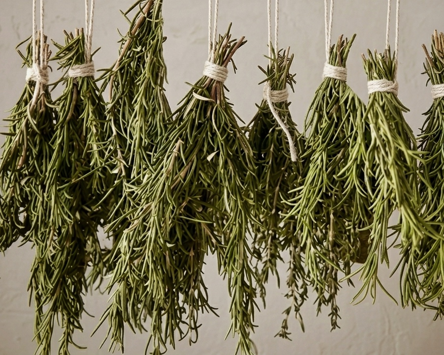
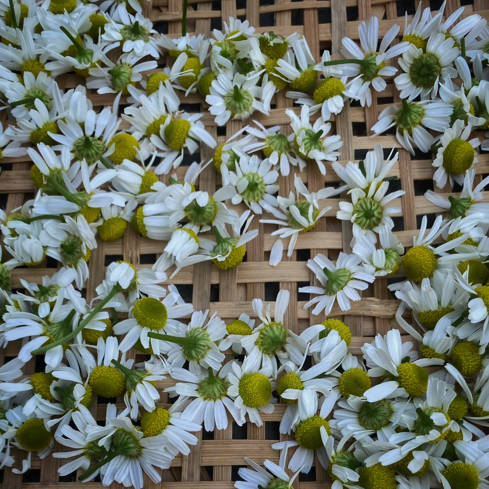

植物との出会いは、ある朝のことでした。
愛犬サリーが庭で、何十種類ものハーブの中からたった一種類だけを選んで食べていた。
なぜ、その一種だったのか。
調べると、それは彼女が抱えていた不調にぴったりと対応する薬効を持つ植物だった。
動物は自分の身体を知っている。
植物も、その身体を知っている。
私たちが学ぶべきは、その対話の言葉なのだと。
そこから10年以上、栽培・収穫・薬学・加工法を学び続けた。
紀元前から現代へと受け継がれてきたハーブの叡智を、
現代の暮らしに寄り添う形で。
ハーブが分かると、サリーからの
「ママ、私、ここがしんどいよ」が受け取れるようになった。
それは、言葉にならないものを言葉にする、という経験だった。
この情報を共有し、飼い主さんとワンちゃんが
健やかに過ごせますように。
それは今は亡きサリーから託された、私への使命だと感じています。
栽培・収穫・乾燥・薬学・加工法——学びに終わりはなかった。
30種以上の薬用植物を常時育て、愛犬たちの身体の変化を記録し続けた。
柏原産ハーブの訴求・地域との植物文化の共創へ。
レッドホースコーポレーション株式会社との契約締結。
庭には今、30種以上の薬用植物が育っている。
季節ごとに芽吹き、香り、枯れ、また戻ってくる。
その繰り返しの中に、植物の記憶がある。
毎朝庭を歩くことが、観察の始まり。
植物の状態を見て、愛犬たちの様子と照らし合わせる。
この積み重ねが、すべての実践の出発点になっている。


植物の知識の庭へ
Explore Botanical Library